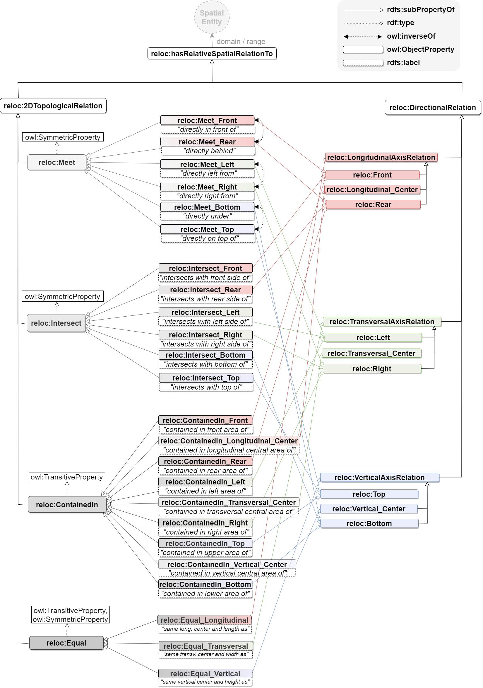

Relative Location Ontology
Release 01.02.2024
- Latest version:
- https://w3id.org/reloc#
- Revision:
- 0.0.1
- Authors:
- Anne Göbels, RWTH Aachen, Design Computation
- Download serialization:


- License:
- Cite as:
- Anne Göbels. Relative Location Ontology. Revision: 0.0.1.
Abstract
This is a place holder text for the abstract. The abstract should contain a couple of sentences summarizing the ontology and its purpose.Introduction back to ToC
This is a place holder text for the introduction. The introduction should briefly describe the ontology, its motivation, state of the art and goals.Namespace declarations
| reloc | <https://w3id.org/reloc#> |
| owl | <http://www.w3.org/2002/07/owl> |
| rdf | <http://www.w3.org/1999/02/22-rdf-syntax-ns> |
| xsd | <http://www.w3.org/2001/XMLSchema> |
| skos | <http://www.w3.org/2004/02/skos/core> |
| rdfs | <http://www.w3.org/2000/01/rdf-schema> |
| dc | <http://purl.org/dc/elements/1.1> |
Relative Location Ontology: Overview back to ToC
This ontology has the following classes and properties.Classes
Object Properties
- 2D Topological Relation
- Bottom
- Contained in
- Directional Relation
- directly behind
- directly in front of
- directly left of
- directly on top of
- directly right of
- directly under
- Equal
- Front
- has relative location with Offset
- has Relative Spatial Relation To
- has the same origin and lenght as
- has the same origin and width as
- has the same vertical origin and height as
- Intersect
- Intersect with the front side of
- Intersects with the bottom of
- Intersects with the left side of
- Intersects with the rear side of
- Intersects with the right side of
- Intersects with the top of
- is contained in the front area of
- is contained in the left area of
- is contained in the longitudinal central area of
- is contained in the lower area of
- is contained in the rear area of
- is contained in the right area of
- is contained in the transversal central area of
- is contained in the upper area of
- is contained in the vertical central area of
- Left
- Longitudinal Axis Relation
- Longitudinal Center
- Meet
- Rear
- Right
- Top
- TransversalAxisRelation
- TransversalCenter
- VerticalAxisRelation
- VerticalCenter
Data Properties
Annotation Properties
Relative Location Ontology: Description back to ToC
Cross reference for Relative Location Ontology classes, properties and dataproperties back to ToC
This section provides details for each class and property defined by Relative Location Ontology.Classes
relative location with Offsetc back to ToC or Class ToC
IRI: https://w3id.org/reloc#RelativeLocationWithOffset
- is in domain of
- has measured distance value dp
Object Properties
- 2D Topological Relation
- Bottom
- Contained in
- Directional Relation
- directly behind
- directly in front of
- directly left of
- directly on top of
- directly right of
- directly under
- Equal
- Front
- has relative location with Offset
- has Relative Spatial Relation To
- has the same origin and lenght as
- has the same origin and width as
- has the same vertical origin and height as
- Intersect
- Intersect with the front side of
- Intersects with the bottom of
- Intersects with the left side of
- Intersects with the rear side of
- Intersects with the right side of
- Intersects with the top of
- is contained in the front area of
- is contained in the left area of
- is contained in the longitudinal central area of
- is contained in the lower area of
- is contained in the rear area of
- is contained in the right area of
- is contained in the transversal central area of
- is contained in the upper area of
- is contained in the vertical central area of
- Left
- Longitudinal Axis Relation
- Longitudinal Center
- Meet
- Rear
- Right
- Top
- TransversalAxisRelation
- TransversalCenter
- VerticalAxisRelation
- VerticalCenter
2D Topological Relationop back to ToC or Object Property ToC
IRI: https://w3id.org/reloc#2DTopologicalRelation
- has super-properties
- has Relative Spatial Relation To op
- has sub-properties
- Intersect op, Meet op
Bottomop back to ToC or Object Property ToC
IRI: https://w3id.org/reloc#Bottom
- has super-properties
- VerticalAxisRelation op
- has sub-properties
- Intersects with the bottom of op, directly under op, is contained in the lower area of op
Contained inop back to ToC or Object Property ToC
IRI: https://w3id.org/reloc#ContainedIn
has characteristics: transitive
- has super-properties
- 2 d2 d topological relation op
- has sub-properties
- is contained in the front area of op, is contained in the left area of op, is contained in the longitudinal central area of op, is contained in the lower area of op, is contained in the rear area of op, is contained in the right area of op, is contained in the transversal central area of op, is contained in the upper area of op, is contained in the vertical central area of op
Directional Relationop back to ToC or Object Property ToC
IRI: https://w3id.org/reloc#DirectionalRelation
- has super-properties
- has Relative Spatial Relation To op
- has sub-properties
- Longitudinal Axis Relation op, TransversalAxisRelation op, VerticalAxisRelation op
directly behindop back to ToC or Object Property ToC
IRI: https://w3id.org/reloc#Meet_Rear
- has super-properties
- Meet op, Rear op
- is inverse of
- directly in front of op
directly in front ofop back to ToC or Object Property ToC
IRI: https://w3id.org/reloc#Meet_Front
- has super-properties
- Front op, Meet op
- is inverse of
- directly behind op
directly left ofop back to ToC or Object Property ToC
IRI: https://w3id.org/reloc#Meet_Left
- has super-properties
- Left op, Meet op
- is inverse of
- directly right of op
directly on top ofop back to ToC or Object Property ToC
IRI: https://w3id.org/reloc#Meet_Top
- has super-properties
- Meet op, Top op
- is inverse of
- directly under op
directly right ofop back to ToC or Object Property ToC
IRI: https://w3id.org/reloc#Meet_Right
- has super-properties
- Meet op, Right op
- is inverse of
- directly left of op
directly underop back to ToC or Object Property ToC
IRI: https://w3id.org/reloc#Meet_Bottom
- has super-properties
- Bottom op, Meet op
- is inverse of
- directly on top of op
Equalop back to ToC or Object Property ToC
IRI: https://w3id.org/reloc#Equal
has characteristics: symmetric, transitive
- has super-properties
- 2 d topological relation op
Frontop back to ToC or Object Property ToC
IRI: https://w3id.org/reloc#Front
- has super-properties
- Longitudinal Axis Relation op
- has sub-properties
- Intersect with the front side of op, directly in front of op, is contained in the front area of op
has relative location with Offsetop back to ToC or Object Property ToC
IRI: https://w3id.org/reloc#hasRelativeLocationWithOffset
- has range
- relative location with offset c
has Relative Spatial Relation Toop back to ToC or Object Property ToC
IRI: https://w3id.org/reloc#hasRelativeSpatialRelationTo
- has sub-properties
- 2D Topological Relation op, Directional Relation op
has the same origin and lenght asop back to ToC or Object Property ToC
IRI: https://w3id.org/reloc#Equal_Longitudinal
- has super-properties
- longitudinal axis relation op
has the same origin and width asop back to ToC or Object Property ToC
IRI: https://w3id.org/reloc#Equal_Transversal
- has super-properties
- transversal axis relation op
has the same vertical origin and height asop back to ToC or Object Property ToC
IRI: https://w3id.org/reloc#Equal_Vertical
- has super-properties
- vertical axis relation op
Intersectop back to ToC or Object Property ToC
IRI: https://w3id.org/reloc#Intersect
has characteristics: symmetric
- has super-properties
- 2D Topological Relation op
- has sub-properties
- Intersect with the front side of op, Intersects with the bottom of op, Intersects with the left side of op, Intersects with the rear side of op, Intersects with the right side of op, Intersects with the top of op
Intersect with the front side ofop back to ToC or Object Property ToC
IRI: https://w3id.org/reloc#Intersect_Front
Intersects with the bottom ofop back to ToC or Object Property ToC
IRI: https://w3id.org/reloc#Intersect_Bottom
Intersects with the left side ofop back to ToC or Object Property ToC
IRI: https://w3id.org/reloc#Intersect_Left
Intersects with the rear side ofop back to ToC or Object Property ToC
IRI: https://w3id.org/reloc#Intersect_Rear
Intersects with the right side ofop back to ToC or Object Property ToC
IRI: https://w3id.org/reloc#Intersect_Right
Intersects with the top ofop back to ToC or Object Property ToC
IRI: https://w3id.org/reloc#Intersect_Top
is contained in the front area ofop back to ToC or Object Property ToC
IRI: https://w3id.org/reloc#ContainedIn_Front
- has super-properties
- Contained in op, Front op
is contained in the left area ofop back to ToC or Object Property ToC
IRI: https://w3id.org/reloc#ContainedIn_Left
- has super-properties
- Contained in op, Left op
is contained in the longitudinal central area ofop back to ToC or Object Property ToC
IRI: https://w3id.org/reloc#ContainedIn_Longitudinal_Center
- has super-properties
- Contained in op, Longitudinal Center op
is contained in the lower area ofop back to ToC or Object Property ToC
IRI: https://w3id.org/reloc#ContainedIn_Bottom
- has super-properties
- Bottom op, Contained in op
is contained in the rear area ofop back to ToC or Object Property ToC
IRI: https://w3id.org/reloc#ContainedIn_Rear
- has super-properties
- Contained in op, Rear op
is contained in the right area ofop back to ToC or Object Property ToC
IRI: https://w3id.org/reloc#ContainedIn_Right
- has super-properties
- Contained in op, Right op
is contained in the transversal central area ofop back to ToC or Object Property ToC
IRI: https://w3id.org/reloc#ContainedIn_Transversal_Center
- has super-properties
- Contained in op, TransversalCenter op
is contained in the upper area ofop back to ToC or Object Property ToC
IRI: https://w3id.org/reloc#ContainedIn_Top
- has super-properties
- Contained in op, Top op
is contained in the vertical central area ofop back to ToC or Object Property ToC
IRI: https://w3id.org/reloc#ContainedIn_Vertical_Center
- has super-properties
- Contained in op, VerticalCenter op
Leftop back to ToC or Object Property ToC
IRI: https://w3id.org/reloc#Left
- has super-properties
- TransversalAxisRelation op
- has sub-properties
- Intersects with the left side of op, directly left of op, is contained in the left area of op
Longitudinal Axis Relationop back to ToC or Object Property ToC
IRI: https://w3id.org/reloc#LongitudinalAxisRelation
- has super-properties
- Directional Relation op
- has sub-properties
- Front op, Longitudinal Center op, Rear op
Longitudinal Centerop back to ToC or Object Property ToC
IRI: https://w3id.org/reloc#LongitudinalCenter
- has super-properties
- Longitudinal Axis Relation op
- has sub-properties
- is contained in the longitudinal central area of op
Meetop back to ToC or Object Property ToC
IRI: https://w3id.org/reloc#Meet
has characteristics: symmetric
- has super-properties
- 2D Topological Relation op
- has sub-properties
- directly behind op, directly in front of op, directly left of op, directly on top of op, directly right of op, directly under op
Rearop back to ToC or Object Property ToC
IRI: https://w3id.org/reloc#Rear
- has super-properties
- Longitudinal Axis Relation op
- has sub-properties
- Intersects with the rear side of op, directly behind op, is contained in the rear area of op
Rightop back to ToC or Object Property ToC
IRI: https://w3id.org/reloc#Right
- has super-properties
- TransversalAxisRelation op
- has sub-properties
- Intersects with the right side of op, directly right of op, is contained in the right area of op
Topop back to ToC or Object Property ToC
IRI: https://w3id.org/reloc#Top
- has super-properties
- VerticalAxisRelation op
- has sub-properties
- Intersects with the top of op, directly on top of op, is contained in the upper area of op
TransversalAxisRelationop back to ToC or Object Property ToC
IRI: https://w3id.org/reloc#TransversalAxisRelation
- has super-properties
- Directional Relation op
- has sub-properties
- Left op, Right op, TransversalCenter op
TransversalCenterop back to ToC or Object Property ToC
IRI: https://w3id.org/reloc#TransversalCenter
- has super-properties
- TransversalAxisRelation op
- has sub-properties
- is contained in the transversal central area of op
VerticalAxisRelationop back to ToC or Object Property ToC
IRI: https://w3id.org/reloc#VerticalAxisRelation
- has super-properties
- Directional Relation op
- has sub-properties
- Bottom op, Top op, VerticalCenter op
VerticalCenterop back to ToC or Object Property ToC
IRI: https://w3id.org/reloc#VerticalCenter
- has super-properties
- VerticalAxisRelation op
- has sub-properties
- is contained in the vertical central area of op
Data Properties
has measured distance valuedp back to ToC or Data Property ToC
IRI: https://w3id.org/reloc#hasOffsetValue
- has domain
- relative location with Offset c
- has range
- float
Annotation Properties
alt labelap back to ToC or Annotation Property ToC
IRI: http://www.w3.org/2004/02/skos/core#altLabel
creatorap back to ToC or Annotation Property ToC
IRI: http://purl.org/dc/elements/1.1/creator
titleap back to ToC or Annotation Property ToC
IRI: http://purl.org/dc/elements/1.1/title
Legend back to ToC
op: Object Properties
dp: Data Properties
ni: Named Individuals
References back to ToC
Add your references here. It is recommended to have them as a list.Acknowledgements back to ToC
The authors would like to thank Silvio Peroni for developing LODE, a Live OWL Documentation Environment, which is used for representing the Cross Referencing Section of this document and Daniel Garijo for developing Widoco, the program used to create the template used in this documentation.